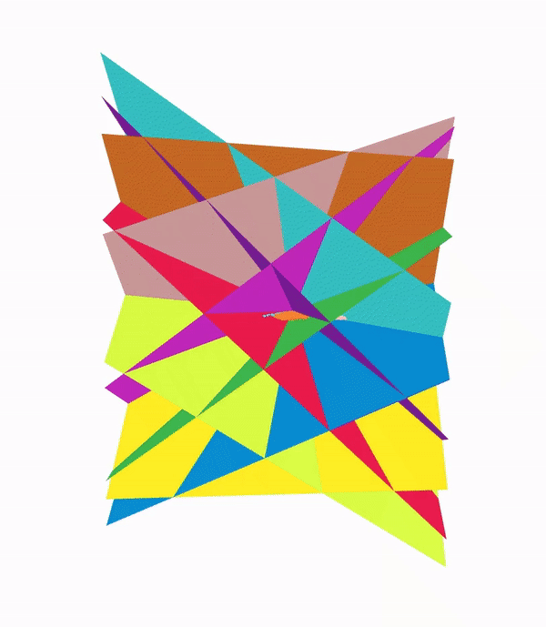
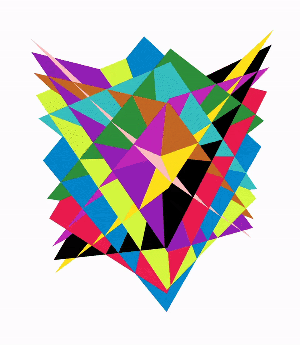

Akshay Raj Dhamija
As of Fall 2018, I am a Research Assistant at the Vision And Security Technology (VAST) Lab and pursuing a PhD in Department of Computer Science at University of Colorado at Colorado Springs. My research is focused towards Deep Learning for Computer Vision and I have a keen interest in application of computer vision algorithms to real world scenarios.
akshay.raj.dhamija@gmail.com
Curriculum vitae
Blog
Work Experience
Research Assistant September 2015 - Present
Vision and Security Technology Lab (UCCS) Colorado Springs, Colorado
Working on IARPA grant for Janus project, aimed towards recognizing faces in the wild, under the guidance of Dr. Terrance Boult. Focused on investigating attribute recognition from faces in both closed set and open set scenarios using SVM's and deep networks.
Computer Vision Intern December 2019 - Feb 2020
Neon, STAR Labs (SRA) Campbell, California
Working on various deep learning algorithms to bring digital avatars to life.
Computer Vision Intern June 2018 - August 2018
Misty Robotics Boulder, Colorado
Developing object detection algorithms for systems with limited computational power. Formulating new evaluation metrics for comparing algorithms in unconstrained scenarios.
Project Consultant November 2012 - August 2015
My Personal Health Records Express Gurgaon, India
An Exhilarating experience, that exposed me to the dynamics of startups and healthcare industry while juggling various responsibilities such as project management, product design, requirement gathering, product delivery and market analysis. Restructured and launched products for various major hospitals and diagnostic chains in India and US.
Publications
Reducing Network Agnostophobia [paper] [code] [animation]
Neural Information Processing Systems (NeurIPS) 2018 - Spotlight PresentationAkshay Raj Dhamija, Manuel Günther and Terrance E. Boult
 
Improving Deep Network Robustness to Unknown Inputs with Objectosphere [paper]
Uncertainty and Robustness in Deep Visual Learning (CVPR’2019 workshop) - Spotlight PresentationAkshay Raj Dhamija, Manuel Günther and Terrance E. Boult
Learning and the Unknown: Surveying Steps toward Open World Recognition [paper]
Proceedings of the AAAI Conference on Artificial Intelligence - 2019Terrance E. Boult, Akshay Raj Dhamija, Steve Cruz, Manuel Günther, James Henrydoss and Walter Scheirer
What's Hiding in my Deep Features? [paper]
Book Chapter - Deep Learning in Biometrics By CRC/Taylor & Francis Press.Ethan M. Rudd, Manuel Günther, Akshay R. Dhamija, Faris A. Kateb, and Terrance E. Boult
Unconstrained Face Detection & OpenSet Recognition Challenge [paper] [website]
Organized the above challenge in International Joint Conference on Biometrics (IJCB) 2017M. Günther, P. Hu, C. Herrmann, C. H. Chan, M. Jiang, S. Yang, A. R. Dhamija, D. Ramanan, J. Beyerer, J. Kittler, M. Al Jazaery, M. I. Nouyed, G. Guo, C. Stankiewicz, and T. E. Boult
Openset: The overlooked elephant of object detection [paper]
Under ReviewAkshay Raj Dhamija, Manuel Günther, Jonathan Ventura and Terrance E. Boult
Projects
VR Website Using A-Frame One Week
Aimed towards experiencing basics of Virtual Reality and creating a personal virtual reality website using A-Frame. The website may be found Here
Feature Extraction & Point Cloud Reconstruction – Satellite Images Three Weeks
Under the guidance of Dr. Jonathan Ventura, this project aims at feature detection from satellite images as well as point cloud construction from multi-view satellite imagery using deep neural networks.
Android Application for GRE Aspirants Two Weeks
The project was aimed at learning Android Application development and creating an application for GRE aspirants for practicing Reading Comprehensions. It has 5000+ Downloads.
Play Store Link
Robot Object Fetching Three Weeks
The Project was a part of the Robotics course at UCCS, where a robot equipped with a camera and a raspberry pie was used to identify a predefined cylindrical object, approach it and grip. Four ultra-sonic sensors were also used in order to localize the robot. ROS was used in the above project.
Remote accessing microscope One Month
The Project involved accessing a microscope using micro controller circuit through a PC and viewing the output image on another PC via LAN.
Patient monitoring System Four Months
The project involved developing a patient monitoring system with parameters of temperature and ECG waveform fed into a PC where processing was done in MATLAB. This project couldn’t be completed but a few Heart Rate Variability parameters (Heart rate, RR Interval, NN50 and SDNN) were successfully extracted from a pre-stored ECG Signal.
Project Report
LED control by Speech Recognition Two Weeks
The project involved developing of user dependent speech recognition software in MATLAB. This software with the help of a small circuit connected to a PC helped in bringing an LED into ON, OFF or BLINKING modes.
Low Cost Colorimeter Two Weeks
The project includes developing of a low cost colorimeter which is capable of measuring concentration of different elements present in solutions like Copper Sulphate and Potassium Permanganate.
Implementing goods codification and production reporting system at FPSI Two Months
The Project involved a detailed study on the manufacturing and managerial process of Fair Plast and Synthetic Industries (FPSI) which is a plastic bag manufacturing company. After the study issues of goods codification and production reporting were addressed by developing goods codification techniques for raw materials, work in progress and finished goods along with a production reporting system to help streamline the management process.
Project Report
Proposing Facility Layout plan for Plastic Bag-Making Industries working in the MSME segment Two Months
The Project involved studying different facility layout plans available along with type of constraints faced by Micro, Small and Medium Enterprises (MSME's) in India. Accordingly, the best suitable layout plan was suggested keeping in mind different machine dimensions, material flow processes, ergonomic standards for body clearance as well as any special requirements according to the industries need.
Project Report
Project Presentation